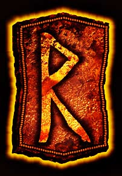

–†–£–ù–ê –†–∞–π–¥–æ (Raido) —Ç–æ–ª–∫–æ–≤–∞–Ω–∏–µ, –∑–Ω–∞—á–µ–Ω–∏–µ —Ä—É–Ω—ã.
–†–£–ù–ê –†–∞–π–¥–æ (Raido) —Ç–æ–ª–∫–æ–≤–∞–Ω–∏–µ, –∑–Ω–∞—á–µ–Ω–∏–µ —Ä—É–Ω—ã. –ü—Ä—è–º–æ–µ –ø–æ–ª–æ–∂–µ–Ω–∏–µ.

–ò–º—è —Ä—É–Ω—ã: –†–∞–π–¥–∞,–†–∞–π–¥–æ (Raido)
–ë—É–∫–≤–∞–ª—å–Ω–æ–µ –∑–Ω–∞—á–µ–Ω–∏–µ —Ä—É–Ω—ã: –†–∞–π–¥–∞,–†–∞–π–¥–æ (Raido) : —Ä–∞–∑–≤–∏—Ç–∏–µ, –¥–≤–∏–∂–µ–Ω–∏–µ, –ø—Ä–æ–≥—Ä–µ—Å—Å, –ø–æ–µ–∑–¥–∫–∞
–î—Ä–µ–≤–Ω–µ–µ –≥–µ—Ä–º–∞–Ω—Å–∫–æ–µ –Ω–∞–∏–º–µ–Ω–æ–≤–∞–Ω–∏–µ, –∑–Ω–∞—á–µ–Ω–∏–µ —Ä—É–Ω—ã –†–∞–π–¥–∞,–†–∞–π–¥–æ (Raido) : Reda (Raidho)
–°—Ç–∞—Ä–æ–µ –Ω–æ—Ä–≤–µ–∂—Å–∫–æ–µ –Ω–∞–∏–º–µ–Ω–æ–≤–∞–Ω–∏–µ, –∑–Ω–∞—á–µ–Ω–∏–µ —Ä—É–Ω—ã –†–∞–π–¥–∞,–†–∞–π–¥–æ (Raido) : raidu
–ê–Ω–≥–ª–æ-—Å–∞–∫—Å–æ–Ω—Å–∫–æ–µ –Ω–∞–∏–º–µ–Ω–æ–≤–∞–Ω–∏–µ, –∑–Ω–∞—á–µ–Ω–∏–µ —Ä—É–Ω—ã –†–∞–π–¥–∞,–†–∞–π–¥–æ (Raido) : Rad (Radh)
–î—Ä–µ–≤–Ω–µ–µ –∫–µ–ª—å—Ç—Å–∫–æ–µ –Ω–∞–∏–º–µ–Ω–æ–≤–∞–Ω–∏–µ, –∑–Ω–∞—á–µ–Ω–∏–µ —Ä—É–Ω—ã –†–∞–π–¥–∞,–†–∞–π–¥–æ (Raido): Ruig
–°—Ç–∞—Ä–æ–µ –∏—Å–ª–∞–Ω–¥—Å–∫–æ–µ –∏–º—è, –∑–Ω–∞—á–µ–Ω–∏–µ —Ä—É–Ω—ã –†–∞–π–¥–∞,–†–∞–π–¥–æ (Raido): Rei√∞
–¢–æ–ª–∫–æ–≤–∞–Ω–∏–µ —Ä—É–Ω—ã –†–∞–π–¥–æ (Raido) –≤ –æ—Å–Ω–æ–≤–Ω–æ–º –ª–µ–∂–∏—Ç –≤ –æ–±–ª–∞—Å—Ç–∏ –æ–±—â–µ–Ω–∏—è, –ø—Ä–µ–¥–ø–æ–ª–∞–≥–∞—è –≥–∞—Ä–º–æ–Ω–∏–∑–∞—Ü–∏—é —á–µ–≥–æ-–Ω–∏–±—É—å; –≤—Å–µ–≥–æ —á—Ç–æ –∏–º–µ–µ—Ç –¥—É–∞–ª–∏—Å—Ç–∏—á–µ—Å–∫—É—é —Å—É—â–Ω–æ—Å—Ç—å – –¥–≤–µ —Å—Ç–æ—Ä–æ–Ω—ã, –¥–≤–µ —Å–æ—Å—Ç–∞–≤–ª—è—é—â–∏–µ.–ó–Ω–∞—á–µ–Ω–∏–µ —Ä—É–Ω—ã –†–∞–π–¥–æ (Raido) —Ç–∞–∫–∂–µ —Å–æ—Å—Ç–æ–∏—Ç –≤ –æ–∫–æ–Ω—á–∞—Ç–µ–ª—å–Ω–æ–º –≤–æ—Å—Å–æ–µ–¥–∏–Ω–µ–Ω–∏–∏, –ø—Ä–∏—Ö–æ–¥—è—â–µ–º –≤ –∫–æ–Ω—Ü–µ –ø—É—Ç–∏, –∫–æ–≥–¥–∞ –Ω–∞—á–∞–ª–æ –∏ –∫–æ–Ω–µ—Ü —Å—Ç–∞–Ω–æ–≤—è—Ç—Å—è –µ–¥–∏–Ω—ã–º —Ü–µ–ª—ã–º.
–¢–û–õ–ö–û–í–ê–ù–ò–ï –ó–ù–ê–ß–ï–ù–ò–Ø –î–†–£–ì–ò–• –†–£–ù
 —Ä—É–Ω–∞ –§–ï–•–£
—Ä—É–Ω–∞ –§–ï–•–£  —Ä—É–Ω–∞ –£–†–£–ó
—Ä—É–Ω–∞ –£–†–£–ó  —Ä—É–Ω–∞ –¢–£–†–ò–°–ê–ó
—Ä—É–Ω–∞ –¢–£–†–ò–°–ê–ó  —Ä—É–Ω–∞ –ê–ù–°–£–ó
—Ä—É–Ω–∞ –ê–ù–°–£–ó  —Ä—É–Ω–∞ –†–ê–ô–î–û
—Ä—É–Ω–∞ –†–ê–ô–î–û  —Ä—É–Ω–∞ –ö–ï–ù–ê–ó
—Ä—É–Ω–∞ –ö–ï–ù–ê–ó  —Ä—É–Ω–∞ –ì–ï–ë–û
—Ä—É–Ω–∞ –ì–ï–ë–û  —Ä—É–Ω–∞ –í–£–ù–¨–û
—Ä—É–Ω–∞ –í–£–ù–¨–û  —Ä—É–Ω–∞ –•–ê–ì–ê–õ–õ
—Ä—É–Ω–∞ –•–ê–ì–ê–õ–õ  —Ä—É–Ω–∞ –ù–ê–£–¢–ò–ó
—Ä—É–Ω–∞ –ù–ê–£–¢–ò–ó  —Ä—É–Ω–∞ –ò–°–ê
—Ä—É–Ω–∞ –ò–°–ê  —Ä—É–Ω–∞ –ô–ï–†
—Ä—É–Ω–∞ –ô–ï–†  —Ä—É–Ω–∞ –≠–ô–í–ê–ó
—Ä—É–Ω–∞ –≠–ô–í–ê–ó  —Ä—É–Ω–∞ –ü–ï–†–¢
—Ä—É–Ω–∞ –ü–ï–†–¢  —Ä—É–Ω–∞ –ê–õ–¨–ì–ò–ó
—Ä—É–Ω–∞ –ê–õ–¨–ì–ò–ó  —Ä—É–Ω–∞ –°–û–£–õ–£
—Ä—É–Ω–∞ –°–û–£–õ–£  —Ä—É–Ω–∞ –¢–ï–ô–í–ê–ó
—Ä—É–Ω–∞ –¢–ï–ô–í–ê–ó  —Ä—É–Ω–∞ –ë–ï–†–ö–ê–ù–û
—Ä—É–Ω–∞ –ë–ï–†–ö–ê–ù–û  —Ä—É–Ω–∞ –ú–ê–ù–ê–ó
—Ä—É–Ω–∞ –ú–ê–ù–ê–ó  —Ä—É–Ω–∞ –õ–ê–ì–£–ó
—Ä—É–Ω–∞ –õ–ê–ì–£–ó  —Ä—É–Ω–∞ –û–¢–ê–õ–ê
—Ä—É–Ω–∞ –û–¢–ê–õ–ê  —Ä—É–Ω–∞ –≠–í–ê–ó
—Ä—É–Ω–∞ –≠–í–ê–ó  —Ä—É–Ω–∞ –ò–ù–ì–£–ó
—Ä—É–Ω–∞ –ò–ù–ì–£–ó  —Ä—É–Ω–∞ –î–ê–ì–ê–ó
—Ä—É–Ω–∞ –î–ê–ì–ê–ó
–†–£–ù–ê –†–∞–π–¥–æ (Raido) —Ç–æ–ª–∫–æ–≤–∞–Ω–∏–µ, –∑–Ω–∞—á–µ–Ω–∏–µ —Ä—É–Ω—ã. –ë–û–õ–ï–ï –ü–û–î–†–û–ë–ù–û
—Ä—É–Ω–∞ –†–∞–π–¥–∞,–†–∞–π–¥–æ (Raido). –¢–æ–ª–∫–æ–≤–∞–Ω–∏–µ –ø—Ä–∏ –≥–∞–¥–∞–Ω–∏–∏ , –∑–Ω–∞—á–µ–Ω–∏–µ —Ä—É–Ω—ã –†–£–ù–ê –†–∞–π–¥–æ (Raido):
–†–£–ù–ê –†–∞–π–¥–æ (Raido) – —Ä—É–Ω–∞ –¥–≤–∏–∂–µ–Ω–∏—è –∏ —Ä–∞–∑–≤–∏—Ç–∏—è –≤ —Å–∞–º–æ–º —à–∏—Ä–æ–∫–æ–º —Å–º—ã—Å–ª–µ —ç—Ç–∏—Ö —Å–ª–æ–≤. –†–∞–π–¥–∞ (Raido) – –∑–∞–º–µ—á–∞—Ç–µ–ª—å–Ω–∞—è —Ä—É–Ω–∞, –¥–ª—è –ª—é–¥–µ–π –∫–æ—Ç–æ—Ä—ã–µ –ø—Ä–µ–¥–ø–æ—á–∏—Ç–∞—é—Ç –∂–∏–∑–Ω—å –≤ –¥–æ—Ä–æ–≥–µ, –∫–æ—Ç–æ—Ä—ã–µ –ª—é–±—è—Ç –ø—É—Ç–µ—à–µ—Å—Ç–≤–∏—è.
–ì–ª–∞–≤–Ω—ã–µ —Ç–µ–∑–∏—Å—ã. –°–æ–≤–µ—Ä—à–µ–Ω—Å—Ç–≤–æ–≤–∞–Ω–∏–µ –Ω–∞–≤—ã–∫–æ–≤ –∏ —É–º–µ–Ω–∏–π, –¥–≤–∏–∂–µ–Ω–∏–µ; —Ä–∞–∑–≤–∏—Ç–∏–µ; —Å–≤—è–∑—å, –ø—É—Ç–µ—à–µ—Å—Ç–≤–∏–µ, –∫–æ–ª–µ—Å–∞; —Å–ø–æ—Å–æ–±–Ω–æ—Å—Ç–∏; –≤–æ—Å—Å–æ–µ–¥–∏–Ω–µ–Ω–∏–µ; —É–ø—Ä–∞–≤–ª–µ–Ω–∏–µ; –ø–æ–ª—É—á–µ–Ω–∏–µ —Ö–æ—Ä–æ—à–µ–≥–æ —Å–æ–≤–µ—Ç–∞; –∫–æ–º–∞–Ω–¥–∏—Ä–æ–≤–∫–∞, –ø–æ–µ–∑–¥–∫–∞ —Å –æ–ø—Ä–µ–¥–µ–ª–µ–Ω–Ω–æ–π —Ü–µ–ª—å—é, —É–¥–∞—á–Ω–æ–µ –≤—Ä–µ–º—è –¥–ª—è –±–∏–∑–Ω–µ—Å–∞.
–ï—Å–ª–∏ –í—ã —Ä–∞–∑–±–∏—Ä–∞–µ—Ç–µ —Å–∏—Ç—É–∞—Ü–∏—é – –Ω–∞–¥–æ –ø–æ–ª–∞–≥–∞—Ç—å, —á—Ç–æ –í—ã –≤—Å—Ç–∞–ª–∏ –Ω–∞ –ø—É—Ç—å –∫ —á–µ–º—É-–ª–∏–±–æ,–∏–º–µ–Ω–Ω–æ —Ç–∞–∫ –≤ —Å–≤–æ–µ–º —Ç–æ–ª–∫–æ–≤–∞–Ω–∏–∏ –∑–Ω–∞—á–µ–Ω–∏—è –≥–æ–≤–æ—Ä–∏—Ç —Ä—É–Ω–∞ –†–∞–π–¥–æ (Raido) –ï—Å–ª–∏ –í—ã —Ö–æ—Ç–µ–ª–∏ —É–∑–Ω–∞—Ç—å —Å–≤–æ—ë –±—É–¥—É—â–µ–µ – –í–∞—Å –∂–¥–µ—Ç –¥–æ—Ä–æ–≥–∞. –ú–æ–∂–µ—Ç –±—ã—Ç—å, –í—ã —Å—Ç–∞—Ä–∞–µ—Ç–µ—Å—å –≤–æ–ø–ª–æ—Ç–∏—Ç—å –≤ –∂–∏–∑–Ω—å –∫–∞–∫–æ–π-–ª–∏–±–æ –ø–ª–∞–Ω –∏–ª–∏ —Ö–æ—Ç–∏—Ç–µ –≤—ã—Å—Ç—Ä–æ–∏—Ç—å –∫–∞–∫–∏–µ-—Ç–æ –æ—Ç–Ω–æ—à–µ–Ω–∏—è. –ß—Ç–æ –±—ã –í—ã –Ω–µ –¥–µ–ª–∞–ª–∏ —Å–µ–π—á–∞—Å, —Ä—É–Ω–∞ —É–∫–∞–∑—ã–≤–∞–µ—Ç –Ω–∞ —Ç–æ, —á—Ç–æ –í—ã –¥–≤–∏–∂–µ—Ç–µ—Å—å –∫ –Ω–∞–º–µ—á–µ–Ω–Ω–æ–π —Ü–µ–ª–∏, –í—ã –Ω–µ —Å—Ç–æ–∏—Ç–µ –Ω–∞ –º–µ—Å—Ç–µ. –ó–Ω–∞–π—Ç–µ, –ø–µ—Ä–µ–¥ –í–∞–º–∏ –ª–µ–∂–∏—Ç –æ—Ç–∫—Ä—ã—Ç–∞—è –¥–æ—Ä–æ–≥–∞, —Å–º–µ–ª–æ –¥–≤–∏–≥–∞–π—Ç–µ—Å—å –≤–ø–µ—Ä–µ–¥.
–†—É–Ω–∞ –†–∞–π–¥–æ (Raido) —É–∫–∞–∑—ã–≤–∞–µ—Ç –Ω–∞ –ø—É—Ç–µ—à–µ—Å—Ç–≤–∏–µ –í–∞—à–µ–≥–æ –¥—É—Ö–∞ –∏–ª–∏ —Ç–µ–ª–∞, –¥—Ä—É–≥–∏–º–∏ —Å–ª–æ–≤–∞–º–∏ –æ –í–∞—à–µ–º –¥—É—Ö–æ–≤–Ω–æ–º —Ä–∞–∑–≤–∏—Ç–∏–∏. –í —Ç–æ–º —á–∏—Å–ª–µ –æ–Ω–∞ –º–æ–∂–µ—Ç –æ–±–æ–∑–Ω–∞—á–∏—Ç—å –±—É–¥—É—â–∏–µ –ø–µ—Ä–µ–º–µ–Ω—ã. –í —Ñ–∏–Ω–∞–Ω—Å–æ–≤–æ–π —Å—Ñ–µ—Ä–µ – —ç—Ç–æ –≤—Ä–µ–º—è –∫—É–ø–ª–∏-–ø—Ä–æ–¥–∞–∂–∏, –æ–±—Ä–µ—Ç–µ–Ω–∏—è –≤–∞–∂–Ω–æ–π –∏–Ω—Ñ–æ—Ä–º–∞—Ü–∏–∏.
–°–æ–≤–µ—Ç —Ä—É–Ω—ã –†–∞–π–¥–∞,–†–∞–π–¥–æ (Raido). –î–æ–≤–µ—Ä—å—Ç–µ—Å—å —Å–∞–º–æ–º—É –∏ —Ö–æ–¥—É —Å–æ–±—ã—Ç–∏–π. –ù–µ –º–µ—à–∫–∞–π—Ç–µ, –Ω–µ —Ä–∞—Å—Ç—Ä–∞—á–∏–≤–∞–π—Ç–µ –≤—Ä–µ–º—è –Ω–∞ –Ω–µ –Ω—É–∂–Ω—ã–µ —Å–æ–º–Ω–µ–Ω–∏—è –∏ —Ä–∞—Å—Å—É–∂–¥–µ–Ω–∏—è, –Ω–∞ –∑–≤—É–∫–∏ –≥–æ–ª–æ—Å–æ–≤ –≤ –í–∞—à–µ–º –ø–æ–¥—Å–æ–∑–Ω–∞–Ω–∏–∏ – –ø—Ä–æ—Å—Ç–æ –¥–≤–∏–≥–∞–π—Ç–µ—Å—å.
–¢–æ–ª–∫–æ–≤–∞–Ω–∏–µ –∑–Ω–∞—á–µ–Ω–∏—è —Ä—É–Ω—ã –†–∞–π–¥–æ –ø—Ä–∏ –≥–∞–¥–∞–Ω–∏–∏ –Ω–∞ –ª—é–±–æ–≤—å –∏–ª–∏ –æ—Ç–Ω–æ—à–µ–Ω–∏—è.
–ë—É–∫–≤–∞–ª—å–Ω–æ–µ —Ç–æ–ª–∫–æ–≤–∞–Ω–∏–µ —Ä—É–Ω—ã –†–∞–π–¥–æ – –ª—é–±–æ–≤–Ω–æ–µ —Å–≤–∏–¥–∞–Ω–∏–µ –∏–ª–∏ –ø—É—Ç–µ—à–µ—Å—Ç–≤–∏–µ. –ß–∞—â–µ –≤—Å–µ–≥–æ –†—É–Ω–∞ –†–∞–π–¥–æ –≤ —Ä—É–Ω–∏—á–µ—Å–∫–∏—Ö –≥–∞–¥–∞–Ω–∏—è—Ö –Ω–∞ –æ—Ç–Ω–æ—à–µ–Ω–∏—è –∏–ª–∏ –ª—é–±–æ–≤—å –ø—Ä–µ–¥—Å–∫–∞–∑—ã–≤–∞–µ—Ç –±–ª–∞–≥–æ–ø–æ–ª—É—á–Ω–æ–µ –ø—É—Ç–µ—à–µ—Å—Ç–≤–∏–µ, –ø—Ä–∏—è—Ç–Ω—É—é –ø–æ–µ–∑–¥–∫—É, –ø–µ—Ä–µ–¥–≤–∏–∂–µ–Ω–∏—è —Å –º–µ—Å—Ç–∞ –Ω–∞ –º–µ—Å—Ç–æ. –í–∞–º –∏ –≤–∞—à–µ–º—É –±–ª–∏–∑–∫–æ–º—É —á–µ–ª–æ–≤–µ–∫—É –º–æ–∂–µ—Ç –≤—ã–ø–∞—Å—Ç—å –≤–æ–∑–º–æ–∂–Ω–æ—Å—Ç—å –ø–æ–ø—É—Ç–µ—à–µ—Å—Ç–≤–æ–≤–∞—Ç—å –≤–º–µ—Å—Ç–µ. –¢–∞–∫–∂–µ –ø–æ—è–≤–ª–µ–Ω–∏–µ –†—É–Ω—ã –†–∞–π–¥–æ –ø—Ä–µ–¥–≤–µ—â–∞–µ—Ç –ø—Ä–∏–º–∏—Ä–µ–Ω–∏–µ –≤ —Å–ø–æ—Ä–∞—Ö, —Ä–∞–∑—É–º–Ω—ã–π –∫–æ–º–ø—Ä–æ–º–∏—Å—Å, —É–¥–æ–≤–ª–µ—Ç–≤–æ—Ä—è—é—â–∏–π –æ–±–µ —Å—Ç–æ—Ä–æ–Ω—ã. –í –æ—Ç–Ω–æ—à–µ–Ω–∏—è—Ö –†—É–Ω–∞ –†–∞–π–¥–æ –ø—Ä–µ–¥—Ä–µ–∫–∞–µ—Ç –¥–æ—Å—Ç–∏–∂–µ–Ω–∏–µ –ø–æ—Å—Ç–∞–≤–ª–µ–Ω–Ω–æ–π —Ü–µ–ª–∏. –¢–æ, –∫ —á–µ–º—É –≤—ã –¥–∞–≤–Ω–æ —Å—Ç—Ä–µ–º–∏–ª–∏—Å—å –∏–ª–∏ —Ç–æ–ª—å–∫–æ –º–µ—á—Ç–∞–µ—Ç–µ –≤—Å–∫–æ—Ä–µ –±—É–¥–µ—Ç –∏—Å–ø–æ–ª–Ω–µ–Ω–æ.
–ì–ª–∞–≤–Ω–æ–µ –∑–Ω–∞—á–µ–Ω–∏–µ —Ä—É–Ω—ã – “–ø—É—Ç—å”. –û —á–µ–º –±—ã –≤—ã –Ω–µ —Å–ø—Ä–∞—à–∏–≤–∞–ª–∏ –∑–Ω–∞–π—Ç–µ ‚Äì –≤—Å–µ –≤ –ø—É—Ç–∏. –ï—Å–ª–∏ –≤—ã –æ –±—É–¥—É—â–µ–º —Å–≤–µ—Ä—à–µ–Ω–∏–∏ ‚Äì —Ç–æ –æ–Ω–æ —É–∂–µ —Å–≤–µ—Ä—à–∞–µ—Ç—Å—è. –ï—Å–ª–∏ –≤—ã —Å–ø—Ä–∞—à–∏–≤–∞–µ—Ç–µ, –¥–µ–ª–∞—Ç—å –ª–∏ –≤–∞–º —á—Ç–æ-—Ç–æ –∫–æ–Ω–∫—Ä–µ—Ç–Ω–æ–µ ‚Äì –¥–µ–ª–∞–π—Ç–µ. –¢–æ —á—Ç–æ –∑–∞–ø–ª–∞–Ω–∏—Ä–æ–≤–∞–ª–∏ ‚Äì —É–∂–µ —Å–≤–µ—Ä—à–∞–µ—Ç—Å—è. –ù–µ –º–µ—à–∞–π—Ç–µ —ç—Ç–æ–º—É —Å–≤–æ–∏–º–∏ –±—É—Ä–Ω—ã–º–∏ —ç–º–æ—Ü–∏—è–º–∏ –∏ –Ω–µ—Å–æ–±—Ä–∞–Ω–Ω–æ—Å—Ç—å—é –≤ –º—ã—Å–ª—è—Ö. –£—Å–ø–æ–∫–æ–π—Ç–µ—Å—å –∏ –ø–æ–∑–≤–æ–ª—å—Ç–µ –ø—Ä–æ–∏–∑–æ–π—Ç–∏ —Ç–æ–º—É –≥–∞—Ä–º–æ–Ω–∏—á–Ω–æ–º—É, —á—Ç–æ —É–∂–µ –Ω–∞ –ø–æ–¥—Ö–æ–¥–µ. –ï—Å–ª–∏ —Å–æ–º–Ω–µ–≤–∞–µ—Ç–µ—Å—å –≤ —Ç–æ–º, –¥–µ–ª–∞—Ç—å –ª–∏ –≤–∞–º —à–∞–≥ ‚Äì —Å—Ç—É–ø–∞–π—Ç–µ —Å–º–µ–ª–æ, –µ—Å–ª–∏ –Ω–∞–º–µ—Ä–µ–Ω–∏—è –≤–∞—à–∏ —á–∏—Å—Ç—ã.
–†—É–Ω–∞ –î–æ—Ä–æ–≥ , –ø—É—Ç–µ–π – –≤ –ø—Ä—è–º–æ–º –∏ –ø–µ—Ä–µ–Ω–æ—Å–Ω–æ–º —Å–º—ã—Å–ª–µ —ç—Ç–æ–≥–æ —Å–ª–æ–≤–∞.
–†–£–ù–ê –†–∞–π–¥–æ (Raido). –í–Ω—É—Ç—Ä–µ–Ω–Ω–µ–µ —Å–æ–¥–µ—Ä–∂–∞–Ω–∏–µ :
–ü–æ—Ç–µ–Ω—Ü–∏–∞–ª—å–Ω–∞—è —Å—É—â–Ω–æ—Å—Ç—å –¥–≤–∏–∂–µ–Ω–∏—è –∏ –Ω–∞–ø—Ä–∞–≤–ª–µ–Ω–∏—è. –†–£–ù–ê –†–∞–π–¥–æ (Raido) –ø—Ä–∏ —Å–≤–æ–µ–º –ø–æ—è–≤–ª–µ–Ω–∏–∏ —Å–∏–º–≤–æ–ª–∏–∑–∏—Ä—É–µ—Ç –¥–≤–∏–∂–µ–Ω–∏–µ –≤ –ø—Ä–æ—Å—Ç—Ä–∞–Ω—Å—Ç–≤–µ–Ω–Ω—ã—Ö –∏–∑–º–µ—Ä–µ–Ω–∏—è—Ö , –∞ —Ç–∞–∫–∂–µ –∏ –Ω–µ—Å–æ–º–Ω–µ–Ω–Ω–æ –≤—Ä–µ–º–µ–Ω–∏ – –æ–ø—Ä–µ–¥–µ–ª—è—è —Å—É—â–µ—Å—Ç–≤–æ–≤–∞–Ω–∏–µ –ß–µ—Ç—ã—Ä–µ—Ö –ù–∞–ø—Ä–∞–≤–ª–µ–Ω–∏–π, –ø—Ä–æ–ø–æ—Ä—Ü–∏–∏ –∏ –æ—Ä–∏–µ–Ω—Ç–∞—Ü–∏—é, –æ–ø—Ä–µ–¥–µ–ª—è–µ—Ç —á–µ—Ç—ã—Ä–µ –≤—Ä–µ–º–µ–Ω–∏ –≥–æ–¥–∞ –∏ –æ—Ç—Å—á–µ—Ç –ø—Ä–æ—Ö–æ–∂–¥–µ–Ω–∏—è –≤—Ä–µ–º–µ–Ω–∏. –í–æ –≤–Ω—É—Ç—Ä–µ–Ω–Ω–µ–º —Å–æ–¥–µ—Ä–∂–∞–Ω–∏–∏ —Ä—É–Ω—ã –†–∞–π–¥–æ (Raido) –∑–∞–∫–ª—é—á–µ–Ω—ã —Å–∏–ª—ã, —É–ø—Ä–∞–≤–ª—è—é—â–∏–µ –ß–µ—Ç—ã—Ä—å–º—è –°—Ç–∏—Ö–∏—è–º–∏., —Å–æ–∑–¥–∞—é—â–∏–µ —Ä–∏—Ç–º–∏—á–µ—Å–∫–∏–µ –¥–µ–π—Å—Ç–≤–∏—è.–í –Ω–∞—á–µ—Ä—Ç–∞–Ω–∏–∏ —Ä—É–Ω—ã –†–∞–π–¥–æ (Raido) –∑–∞–∫–ª—é—á–µ–Ω—ã —Å–ø–æ—Å–æ–±–Ω–æ—Å—Ç–∏ —Å–¥–µ—Ä–∂–∏–≤–∞—Ç—å –∏ –∫–æ–Ω—Ç—Ä–æ–ª–∏—Ä–æ–≤–∞—Ç—å —ç–Ω–µ—Ä–≥–∏–∏ —Å—Ç–∏—Ö–∏–π –¥–ª—è –¥–æ—Å—Ç–∏–∂–µ–Ω–∏—è –∫–æ–Ω–∫—Ä–µ—Ç–Ω—ã—Ö —Ä–µ–∑—É–ª—å—Ç–∞—Ç–æ–≤. –ó–Ω–∞—á–µ–Ω–∏–µ —ç—Ç–æ–π —Ä—É–Ω—ã —Å–≤—è–∑–∞–Ω–æ —Å –ø—Ä–∏–Ω—è—Ç–∏–µ–º –ø—Ä–∞–≤–∏–ª—å–Ω–æ–≥–æ —Ä–µ—à–µ–Ω–∏—è –∏ –ø—Ä–æ—è–≤–ª–µ–Ω–∏—è–º–∏ –º—É–∂–µ—Å—Ç–≤–∞, –Ω–µ–æ–±—Ö–æ–¥–∏–º–æ–≥–æ –¥–ª—è –µ–≥–æ –æ—Å—É—â–µ—Å—Ç–≤–ª–µ–Ω–∏—è. –†–£–ù–ê –†–∞–π–¥–æ (Raido) -—ç—Ç–æ –†—É–Ω–∞ –Ω–∞—à–∏—Ö –≤–Ω—É—Ç—Ä–µ–Ω–Ω–∏—Ö –∏—Å–∫–∞–Ω–∏–π, –ø–æ–∏—Å–∫–∞ —Å–º—ã—Å–ª–∞, —Ü–µ–ª–µ–π –∏ –¥—É—Ö–æ–≤–Ω–æ–≥–æ —Å–æ–≤–µ—Ä—à–µ–Ω—Å—Ç–≤–æ–≤–∞–Ω–∏—è.
–¢–æ–ª–∫–æ–≤–∞–Ω–∏–µ —Ä—É–Ω. –†—É–Ω–∞ –†–∞–π–¥–∞,–†–∞–π–¥–æ (Raido) —Ç–æ–ª–∫–æ–≤–∞–Ω–∏–µ, –∑–Ω–∞—á–µ–Ω–∏–µ —Ä—É–Ω—ã. –ú–∞–≥–∏—á–µ—Å–∫–æ–µ –ø—Ä–∏–º–µ–Ω–µ–Ω–∏–µ :
–ú–∞–≥–∏—á–µ—Å–∫–æ–µ –ø—Ä–∏–º–µ–Ω–µ–Ω–∏–µ
–†–£–ù–ê –†–∞–π–¥–æ (Raido) —Ç–æ–ª–∫–æ–≤–∞–Ω–∏–µ, –∑–Ω–∞—á–µ–Ω–∏–µ —Ä—É–Ω—ã – —Ä—É–Ω–∞ —Ä–æ—Å—Ç–∞, —Ä–∞–∑–≤–∏—Ç–∏—è, –æ–Ω–∞ –ø–æ–º–æ–∂–µ—Ç —Ç–∞–º, –≥–¥–µ –Ω—É–∂–Ω–æ, —Å–¥–≤–∏–Ω—É—Ç—å —á—Ç–æ-–ª–∏–±–æ —Å –º–µ—Ä—Ç–≤–æ–π —Ç–æ—á–∫–∏, –ø–æ–¥—Ç–æ–ª–∫–Ω—É—Ç—å —Å–∏—Ç—É–∞—Ü–∏—é –∫ —Ä–∞–∑–≤–∏—Ç–∏—é. –û–±—Ä–µ—Ç–µ–Ω–∏–µ —Å–ø—Ä–∞–≤–µ–¥–ª–∏–≤–æ—Å—Ç–∏; –∫–æ–º—Ñ–æ—Ä—Ç–Ω–æ–µ –±–µ–∑–æ–ø–∞—Å–Ω–æ–µ –ø—É—Ç–µ—à–µ—Å—Ç–≤–∏–µ; –∑–∞–∫–æ–Ω–Ω–æ—Å—Ç—å –∏ –∫–æ–º–º—É–Ω–∏–∫–∞—Ü–∏–∏; –æ–±–µ—Ä–µ–≥ –≤ –¥–æ—Ä–æ–≥–µ, –∫–æ—Ç–æ—Ä—ã–π —Å–æ–∫—Ä–∞—Ç–∏—Ç –∏ —Å–≥–ª–∞–¥–∏—Ç –≤–∞—à –ø—É—Ç—å, –∫–æ—Ç–æ—Ä—ã–π —Å–º–æ–∂–µ—Ç –æ–±–æ–≥–∞—Ç–∏—Ç—å –í–∞—à–µ –ø—É—Ç–µ—à–µ—Å—Ç–≤–∏–µ –ø—Ä–∏—è—Ç–Ω—ã–º–∏ –≤–ø–µ—á–∞—Ç–ª–µ–Ω–∏—è–º–∏ –∏ —Å–º–æ–∂–µ—Ç –æ–≥—Ä–∞–¥–∏—Ç—å –æ—Ç –Ω–µ–æ–∂–∏–¥–∞–Ω–Ω—ã –∏ –æ—Ç—Ä–∏—Ü–∞—Ç–µ–ª—å–Ω—ã—Ö –ø—Ä–æ–±–ª–µ–º –∏ —Å–æ–±—ã—Ç–∏–π; –ø–æ–º–æ–≥–∞–µ—Ç –≤ —Å–æ—Ö—Ä–∞–Ω–µ–Ω–∏–∏ —Å–∏–ª –∏ —É–∫–∞–∑—ã–≤–∞–µ—Ç –Ω–∞ –ø—Ä–∞–≤–∏–ª—å–Ω–æ–µ –Ω–∞–ø—Ä–∞–≤–ª–µ–Ω–∏–µ –Ω–∞ –ø—É—Ç–∏ –∫ –∫–∞–∫–æ–π-–ª–∏–±–æ —Ü–µ–ª–∏.–¢–∞–∫–æ–≤–æ –º–∞–≥–∏—á–µ—Å–∫–æ–µ –∑–Ω–∞—á–µ–Ω–∏–µ —Ä—É–Ω—ã –†–∞–π–¥–æ (Raido).
–ü—Ä–∏–º–µ–Ω–µ–Ω–∏–µ –≤ —Ä—É–Ω–Ω—ã—Ö –∑–∞–ø–∏—Å—è—Ö (—Ä—É–Ω–µ—Å–∫—Ä–∏–ø—Ç–∞—Ö) , —Ç–∞–∫–∂–µ –ø—Ä–∏ –∏–∑–≥–æ—Ç–æ–≤–ª–µ–Ω–∏–∏ —Ä—É–Ω–∏—á–µ—Å–∫–æ–≥–æ –∞–º—É–ª–µ—Ç–∞:
–†—É–Ω–∞ –†–∞–π–¥–∞,–†–∞–π–¥–æ (Raido) –∑–Ω–∞—á–µ–Ω–∏–µ –≤ —Ä—É–Ω–µ—Å–∫—Ä–∏–ø—Ç–µ – –î–ª—è –∫–æ–º—Ñ–æ—Ä—Ç–Ω–æ–≥–æ –∏ –±–µ–∑–æ–ø–∞—Å–Ω–æ–≥–æ –ø—É—Ç–µ—à–µ—Å—Ç–≤–∏—è.
–†—É–Ω–∞ –†–∞–π–¥–∞,–†–∞–π–¥–æ (Raido) –∑–Ω–∞—á–µ–Ω–∏–µ –≤ —Ä—É–Ω–µ—Å–∫—Ä–∏–ø—Ç–µ – –î–ª—è –ø–æ–¥—Ç–∞–ª–∫–∏–≤–∞–Ω–∏—è –≤–ø–µ—Ä–µ–¥ –≤ —Å–ª–æ–∂–Ω–æ–º –¥–µ–ª–µ.
—Ç–æ–ª–∫–æ–≤–∞–Ω–∏–µ —Ä—É–Ω—ã Raido (–†–∞–π–¥–æ) –≤ –ø–µ—Ä–µ–≤–µ—Ä–Ω—É—Ç–æ–º –ø–æ–ª–æ–∂–µ–Ω–∏–∏
–ø—Ä–µ–¥—ã–¥—É—â–∞—è —Ä—É–Ω–∞ _ —Å–ª–µ–¥—É—é—â–∞—è —Ä—É–Ω–∞